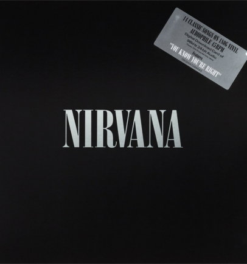
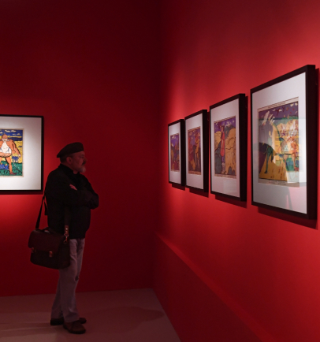
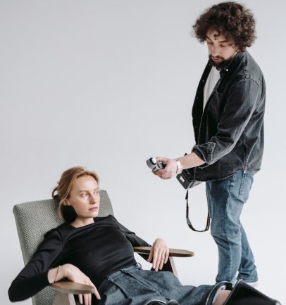

Собираемся и слушаем альбом Nirvana. Nirvana
Это третий альбом группы, выпущенный после смерти Курта Кобейна и первый, содержащий студийный материал.

Это третий альбом группы, выпущенный после смерти Курта Кобейна и первый, содержащий студийный материал.
Один из самых популярных подкастов в мире. В нём авторы объясняют, как устроены разные вещи.
Музыка группы имеет эклектичный характер, сочетая в себе элементы музыки соул, джаза, ритм-блюза и фанка.

Это будет самая полная выставка с 1988 года, того времени, когда впервые заговорили о Малевиче. Экспозиция займёт два этажа павильона.

Фотографы издания расскажут, как им удается создавать потрясающие кадры и что может испортить весь процесс.
Российская джипси-фолк-рок группа, основанная в 2016 году в Санкт-Петербурге. В основной состав группы входят Юрий Музыченко